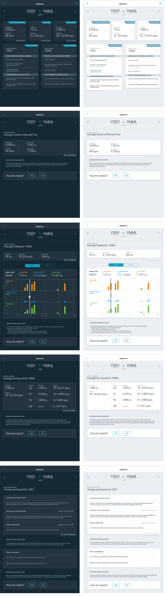

THE ASK
Create an iPad app for pilots that helps them utilize and understand their aggregate airline's flight data in a way that quickly shows them what to expect on an upcoming flight. From idea to implementation, we spent almost 10 months bringing the MVP of this product to life and introducing the app to our Beta group before COVID-19 "grounded" the project (see what I did there?)
THE TEAM
This project was a collaboration between GE and Qantas, a major Australian airline. Our team consisted of 19 people across both companies spanning Product Management, UX Research and Design, Engineering, Data Scientists, and Subject Matter Experts (in the form of two very charming and charmingly accented pilots).
My role in the project was lead UX Designer, spearheading the evaluative research efforts, solution design and wireframing, and the visual and interaction design of the final product. I ran the design workshops and sprints with the team, as well as uasability testing with prototypes every step of the way. On the Qantas side, I had a part-time researcher and designer to help me with the workload, as needed. The part-time researcher was particularly helpful in gathering the generative research and helping me build out the Jobs To Be Done opportunities and journeys.
Utilizing this data + recordings and in-person pilot interviews, my first step was to understand and create the journey map of a flight from the pilot perspective (one take off and landing). This helped me to look for pain points (too many decisions and too little time), environment constraints (dark mode necessary for a dark cockpit) and opportunities (high-level, easy-to-understand visuals) to inform my designs.
Ask questions, questions and more questions
To understand this audience better and to understand the tons of raw flight data available and how it could be manipulated and served up in an easy-to-understand way, I bugged the GE data scientists at every turn to help me understand flying, flight data, and a pilot's mindset. Most of the GE data scientists are pilots, as well, so I got to go on several up close and personl small plane flights. I loved it, my stomach, not so much. But when I set out to learn and empathize, I am committed (RIP chicken salad sandwich on a crossaint.)
DESIGN WORKSHOP
We started out the design phase with a Design Thinking Workshop with both teams, starting with the Difficulty/Importance matrix to determine which of the 25 identified opportunities would make it into our MVP (I prefer Minimum Lovable Product, but standards must...) For phase one and launch of the product we agreed we'd only be able to tackle 3-5 of the ourcomes.
Much discussion between the subject matter experts on what would be enough functionality to be adoptable, engineering on what was feasible to build in the timeframe and product on what was necessary to make sure the product was commercialized in a way that other airlines would be interested in the product, ensued. Eventually we came to an agreement and I was able to split the team into groups for sketching sessions.
Our sketching activites resulted by week's end in a rough wireframe that we were able to take to pilots for validation across three airlines.
WIREFRAMES & PROTOTYPING
Every project has its mishaps, and ours was no exception. As we continued to validate our first set of wireframes the feedback we were getting was that our MVP didn’t have enough content to be viewed as valuable enough for pilots to open “yet another application.”
However, deadlines don’t go away and developers don’t grow on trees, so we had to make sure our MVP was buildable in the desired timeframe, while still providing enough value to pilots for adoption.
I went back to the drawing board and sketched out a solutions that incorporated all of the pilot feedback gathered from our initial concept (and all of its scope creep), taking it back to the full team for an iterative design thinking session on what quick wins we could achieve in addition to our identified features to make the product more adoptable.
To make sure we wouldn't run this issue again, with this phase of validation, I built a prototype with all of the functionality that had come from pilot feedback, that we knew we wouldn't have time to build. I interviewed 10 pilots and made them pick the top 5 important pieces of content. I asked them if they would use the app if it only had those 5 pieces of content. Thankfully, due to the scarcity/difficulty obtaining the type of informatin we were surfacing for pilots, they did validate that they would find the product useful and we were confident we could move forward with our MVP (the one buildable in the timeframe). I'm not going to lie, that was a rough couple of months.
VISUAL & INTERACTION DESIGN
The last phase was the visual and interaction design phase. I worked on visual designs straight from my sketches that the team agreed was the direction we would take to make our Beta date. Once designs were locked, I used Zeplin to get the specs to the engineering team and worked with them through their Agile sprints to get the product built to spec.

Beta Program
Measuring for success and iteration is the most important step in my opinion. And, I wish I had wildly successful metrics to enter here. But we just finished development, made it through our Apple Design Review and had just sent out Beta invitations with downloads to the app when COVID hit and the whole team at Qantas was furloughed. I believe in my heart, though, that we will get this little iPad Preflight app that could into the hands of pilots one day soon.